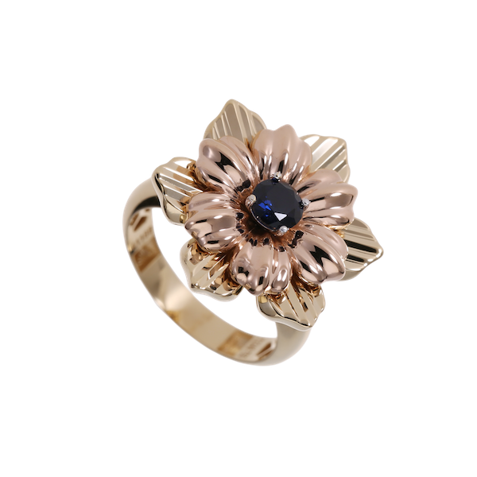
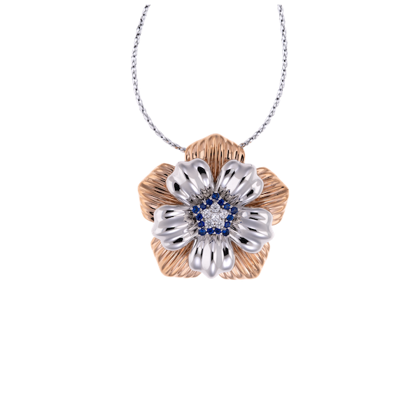
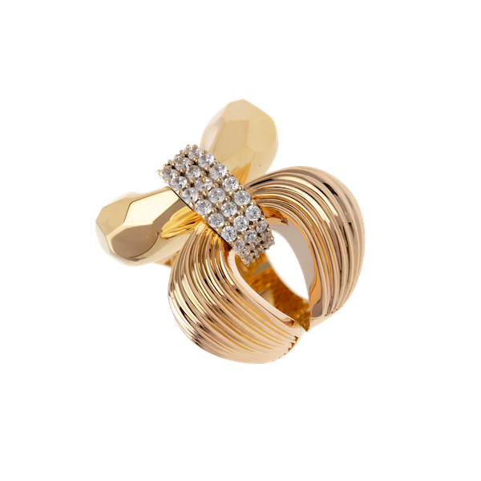

Generic ML
Data-driven modeling using established machine learning algorithms for prediction, pattern recognition and nonlinear data analysis.
SVR, GPR, ANN & more than 35 modelsI work at the intersection of strategic thinking and design thinking, taking a multidisciplinary approach to extend the intelligence of machine learning and data analytics across engineering, research, and business management. Alongside this technical and strategic work, jewelry and gold manufacturing is both my profession and a long-standing passion—a field where my experience in business management, strategy, and digital transformation comes together with creativity, craftsmanship, and technology.
My work does not sit inside a single title. I take a multidisciplinary approach, moving between strategy, technology, research and design — using each discipline as a different lens for understanding complex problems and building better outcomes.
My approach to strategy is about seeing what others overlook. When conventional thinking leads people and strategists toward the same conclusions, I look at the problem from a different angle — questioning assumptions, uncovering hidden connections, and identifying opportunities that are not immediately visible.
My research publications focus on building intelligence from data, exploring machine learning, symbolic and computational approaches that transform complex datasets into interpretable models, predictive insights and data-driven decision systems across engineering and business management.
Data-driven modeling using established machine learning algorithms for prediction, pattern recognition and nonlinear data analysis.
SVR, GPR, ANN & more than 35 modelsAdvanced predictive modeling by combining multiple learners to improve accuracy, robustness and generalization across complex datasets.
XGBoost, Ensemble Models & Stacking ImplementationInterpretable mathematical discovery through symbolic regression and explainable computational modeling.
Symbolic Regression · Alvyn® SymbolJewelry and gold are both a profession and a long-standing passion. The focus is on building businesses around them — bringing together strategy, business management, branding and digital transformation to turn craftsmanship and products into stronger businesses.



Brand Awareness, slide 2 of 3
Projects built around machine learning and intelligent systems, turning data, ideas and emerging technologies into practical solutions designed to make the world a better place to live.
An interpretable symbolic machine learning system for engineering discovery. The project explores mathematical relationships within data, supporting clearer models, deeper understanding and practical insights into complex engineering problems.
A machine learning environment for data driven engineering workflows. The project connects data analysis and predictive modeling to turn complex datasets into useful insights for research and practical decision making.
A space for exploring emerging ideas in machine learning and intelligent systems. The project’s direction, practical applications and milestones will develop as research reveals opportunities for meaningful solutions.